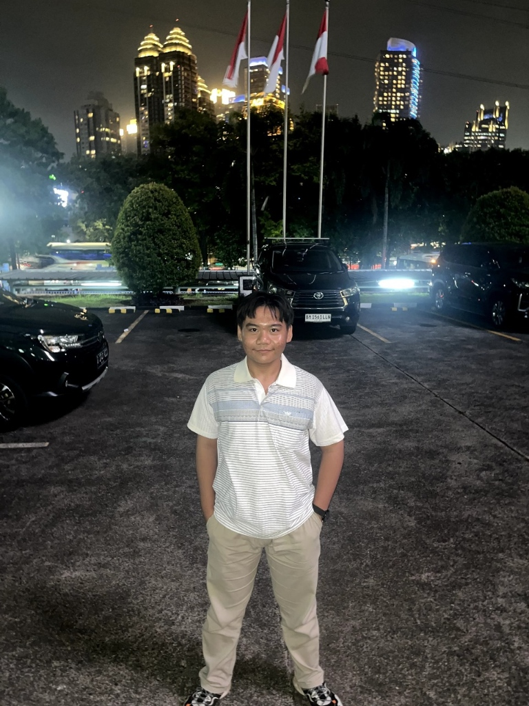

Halo, saya Muhammad Rafie Rabbani (Jakarta, 13 September 2009). Siswa SMAN 70 Jakarta, Young Entrepreneur yang aktif mengembangkan bisnis keluarga, dan mendalami Coding & AI untuk bergelut di bidang teknologi.

Menjadi bagian dari diri saya untuk selalu memberikan rasa ingin tahu terhadap dunia dan isinya. Itulah sebabnya saya aktif mengikuti ekstrakurikuler KIR (Karya Ilmiah Remaja) dan EKSPOSE.
EKSPOSE/strong> adalah tempat saya menyalurkan hobi fotografi dan videografi. Dan, KIR adalah tempat saya mengasah skill coding dan membuka ruang eksplorasi pengetahuan teknologi serta AI.
Di samping teknologi, jiwa saya sangat menikmati musik-musik orkestra dan klasik yang harmonis dan penuh kedisiplinan.
Saya adalah seorang musisi yang bermain di Marching Band Bhina Caraka Bea Cukai RI. Musik mengajarkan saya tentang harmoni, disiplin, dan kerja keras tim.
The Bringer of Jollity
Koleksi momen berharga di berbagai panggung Istana Merdeka, kejuaraan internasional, upacara kementerian, konser simfoni, hingga latihan kepemimpinan ansambel.
Perjalanan memimpin tim, mengelola logistik acara skala besar, mengawal keuangan organisasi, hingga bakti sosial kemasyarakatan.
Bhina Caraka Bea Cukai RI
MBBC 2026
MBBC 2025
SMPN 110 Jakarta
Majelis Perwakilan Kelas
Panti Asuhan Tangerang
Saya terbuka dengan ruang diskusi, rancangan, dan pemikiran baru.
Salah satu hal yang saya pelajari dari Steve Jobs adalah waktumu itu terbatas jadi jangan sia-siakan dirimu mencoba menjadi orang lain. Menjadi dirimu berarti menang dengan caramu, menanggapi kesalahan dengan caramu, dan sukses dengan caramu.
SMAN 70 Jakarta • Musisi & Young Innovator